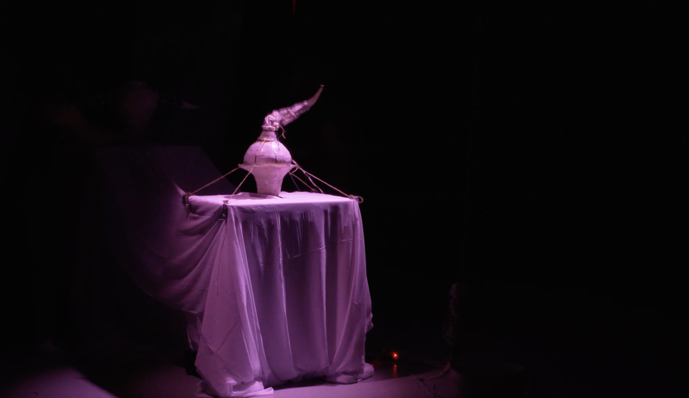

Touch, Sound, Motion
An Exploration of Interactive Installation at the Barnard Movement Lab.
Selected as the 2025–26 Barnard Movement Lab Student Artist-in-Residence, I developed a series of explorations into interactive installations, focusing on connecting these systems to the lab's spatial resources—specifically the ETC Eos lighting console. The work spans several levels of interaction:
Sound to Robotic Movement & Lighting Change
Could a clap—rather than conventional code—activate a robot? I wanted to create a more interactive, multisensory relationship between human gesture and robotic movement. Using Python-based sound detection and custom code, I networked a custom-designed robotic tentacle with the ETC lighting console. The result is an interactive loop: when the audience claps, the lighting shifts and the robot moves in response, simultaneously.
An immediate sound-to-robotic-movement route, without lighting. When the audience claps, the robotic tentacle "crawls."
A combined sound-to-movement-and-lighting route. Each clap shifts the light color. On the 13th clap, the light turns red, zooms to 100%, and the robotic tentacle begins moving.
(Note: To read how I built the robotics from scratch, see The Roro.)
Touch to Sound Movement
Beyond sound, I wanted to explore touch as an input. Touch is a baby's first way of exploring curiosity, yet it's a sense we increasingly overlook in the digital era. This piece asks whether a touch-directed instrument can reclaim that curiosity, inviting people to co-create sound art together through physical contact.
I built the piece using the coil method to form a ceramic vessel. After the glaze firing, I applied five strips of copper tape to the surface, soldered connections on top of them, and wired the tape to ESP32 touch pins housed inside the vessel. Touching each soldered section triggers a corresponding synthesized note (do-re-mi-fa-so), and touching the sections in sequence shifts the tone itself—for example, moving between a sine wave and a sawtooth wave.
More Experiments
I combined my explorations of touch, sound, and robotic movement into a single interactive installation that pairs the touch-triggered instrument with the robotics. When certain notes are touched in sequence, the robot begins to move.